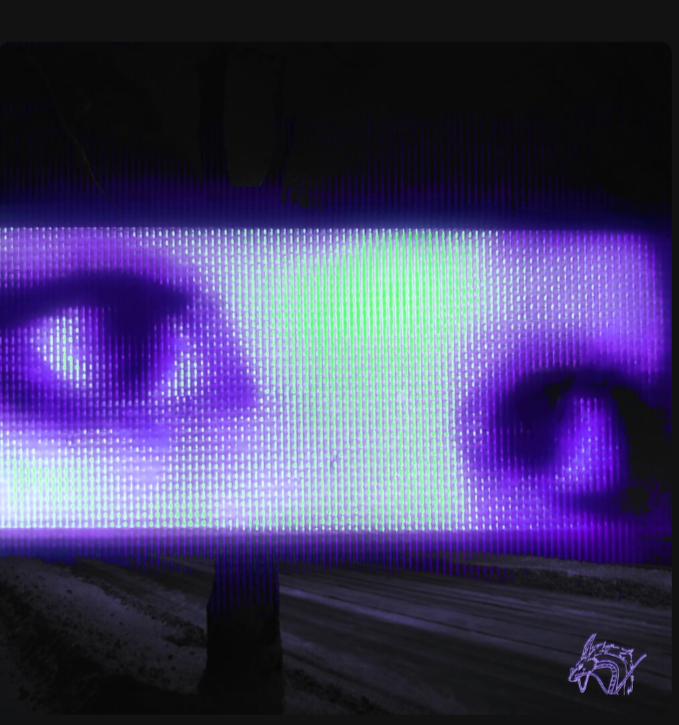

my!lane
my!lane — исполнитель в жанре электроники. 12 Некоторые популярные треки: This Feeling, This Feeling (Sped Up), Stereo Love, Let It Out.
История my!lane
По информации из интервью 2022 года, музыкант родом из Екатеринбурга. Он рассказывал, что менял псевдонимы, пытаясь найти что-то уникальное и подходящее под разные жанры. Псевдоним my!lane (читается как майлейн/майлэйн) связан с местом, где исполнитель вырос: «my» — мой, «lane» — переулок. Музыкант сотрудничал с другими исполнителями, в частности с Oneheart. Среди совместных работ — композиции Garden и For a Second.